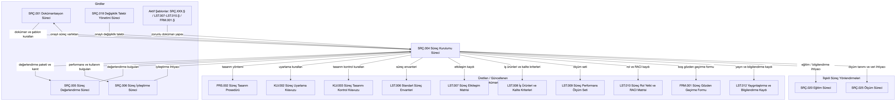

İÜC.BİDB.LST.007 - Süreç Etkileşim Matrisi (İÜC.BİDB.SRÇ.004)
1. Liste Özeti
| Alan | Değer |
|---|---|
| Liste Kodu ve Adı | İÜC.BİDB.LST.007 - Süreç Etkileşim Matrisi (İÜC.BİDB.SRÇ.004) |
| İlgili Süreç | İÜC.BİDB.SRÇ.004 - Süreç Kurulumu Süreci |
| Kullanım Amacı | Süreç Kurulumu Sürecinin girdi, çıktı, kayıt ve yönlendirme etkileşimlerini görsel ve matris yapısıyla izlemek |
| Sorumlu | Mustafa Nusret SARISAKAL - Bilgi İşlem Daire Başkanı |
| Durum | Aktif |
| Sürüm | v1.0 |
2. Kullanım Değerleri
| Alan | Kullanım Kuralı |
|---|---|
| Mermaid Kodu | Diyagramın kaynak kodu bu bölümde saklanır. |
| PNG Görsel | Mermaid koduyla aynı etkileşim modelinden üretilen görsel kullanılır. |
| Girdi Matrisi | SRÇ.004'e gelen süreç, standart, karar ve bilgi etkileşimleri açıklanır. |
| Çıktı Matrisi | SRÇ.004'ten diğer süreç ve hedeflere giden varlık ve yönlendirmeler açıklanır. |
| Etkileşim Notları | Özel uygulama, sınır ve kanıt kuralları yazılır. |
3. Süreç Etkileşim Diyagramı

4. Girdi Etkileşimleri Matrisi
| Kaynak Süreç / Kaynak | Etkileşim Türü | Girdi / Tetikleyici | Kayıt / Kanıt | Açıklama |
|---|---|---|---|---|
| İÜC.BİDB.SRÇ.001 - Dokümantasyon Süreci | Doküman ve şablon kuralları | Güncel doküman yapısı, adlandırma ve yayın kuralları | İÜC.BİDB.SRÇ.XXX.Ş - Süreç Tanımı Şablonu; aktif LST/FRM şablonları | Süreç varlıklarının ortak yapıda hazırlanmasını sağlar. |
| İÜC.BİDB.SRÇ.005 - Süreç Değerlendirme Süreci | Değerlendirme girdisi | BP ve PA/GP bulguları ile kanıt açıkları | Numaralandırılmış FRM.001 değerlendirme kaydı | Yeni süreç veya bakım ihtiyacını tetikler. |
| İÜC.BİDB.SRÇ.006 - Süreç İyileştirme Süreci | İyileştirme girdisi | Önceliklendirilmiş süreç iyileştirme ihtiyacı | İyileştirme kararı ve aksiyon kaydı | Standart süreç setinin bakımına girdi sağlar. |
| İÜC.BİDB.SRÇ.018 - Değişiklik Talebi Yönetimi Süreci | Değişiklik girdisi | Onaylı süreç değişikliği veya yeni süreç talebi | SRÇ.018 talep, karar ve onay kaydı | Tüm değişiklik ve talepler tek süreç üzerinden alınır. |
| ISO/IEC 15504-5 ve kurumsal gereksinimler | Standart / kurumsal girdi | Süreç amacı, sonuç, BP/PA-GP ve organizasyonel ihtiyaç | İlgili standart bölümü ve yetkili kurumsal karar | Süreç tasarım kapsamını ve zorunlu beklentileri belirler. |
| Aktif süreç ve kayıt şablonları | Doküman yapısı | SRÇ.XXX.Ş, LST.007.Ş, LST.008.Ş, LST.009.Ş, LST.010.Ş ve FRM.001.Ş yapıları | 02 - Şablonlar altındaki aktif sayfalar | Arşivdeki kaldırılmış şablonlar kullanılmaz. |
| İÜC.BİDB.PRS.002 - Süreç Tasarım Prosedürü | Tasarım yöntemi | Tasarım adımları, sorumluluklar ve kontrol kapıları | İÜC.BİDB.PRS.002 - Süreç Tasarım Prosedürü | Süreç paketinin hazırlanma yöntemini belirler. |
| İÜC.BİDB.KLV.002 - Süreç Uyarlama Kılavuzu | Uyarlama kuralı | Uyarlanabilir alanlar, sınırlar ve onay koşulları | İÜC.BİDB.KLV.002 - Süreç Uyarlama Kılavuzu | Süreç amacı ve zorunlu sonuçların korunmasını sağlar. |
| İÜC.BİDB.KLV.003 - Süreç Tasarımı Kontrol Kılavuzu | Kontrol kuralı | Şablon, yerleşim, kanıt ve yayın öncesi kontrol noktaları | İÜC.BİDB.KLV.003 - Süreç Tasarımı Kontrol Kılavuzu | Süreç tasarım paketinin bütünsel kontrolünde kullanılır. |
| İÜC.BİDB.LST.006 - Standart Süreç Envanteri | Envanter girdisi | Standart/kurumsal süreç kimliği, sahiplik ve durum | İÜC.BİDB.LST.006 - Standart Süreç Envanteri | Tasarlanacak veya güncellenecek sürecin kimliğini doğrular. |
5. Çıktı Etkileşimleri Matrisi
| Hedef Süreç / Hedef | Etkileşim Türü | Çıktı / Yönlendirme | Kayıt / Kanıt | Açıklama |
|---|---|---|---|---|
| İÜC.BİDB.SRÇ.001 - Dokümantasyon Süreci | Dokümantasyon çıktısı | Onaylanan süreç varlıkları ve yayın ihtiyacı | İÜC.BİDB.SRÇ.004 - Süreç Kurulumu Süreci; süreç özel kayıtlar | Kontrollü yayın ve doküman yönetimi için aktarılır. |
| İÜC.BİDB.SRÇ.005 - Süreç Değerlendirme Süreci | Değerlendirme çıktısı | Değerlendirilebilir süreç paketi ve izlenebilir kanıtlar | İÜC.BİDB.LST.007 - Süreç Etkileşim Matrisi (İÜC.BİDB.SRÇ.004); İÜC.BİDB.LST.008 - İş Ürünleri ve Kalite Kriterleri Listesi (İÜC.BİDB.SRÇ.004); İÜC.BİDB.LST.009 - Süreç Performans Ölçüm Seti (İÜC.BİDB.SRÇ.004); İÜC.BİDB.LST.010 - Süreç Rol Yetki ve RACI Matrisi (İÜC.BİDB.SRÇ.004); İÜC.BİDB.FRM.001 - Süreç Gözden Geçirme Formu (İÜC.BİDB.SRÇ.004) | Süreç yetenek değerlendirmesinin kanıt temelini oluşturur. |
| İÜC.BİDB.SRÇ.006 - Süreç İyileştirme Süreci | İyileştirme çıktısı | Performans, kullanım ve değerlendirme bulguları | İÜC.BİDB.LST.009 - Süreç Performans Ölçüm Seti (İÜC.BİDB.SRÇ.004); numaralandırılmış FRM.001 | İyileştirme önceliklerinin belirlenmesini destekler. |
| İÜC.BİDB.SRÇ.020 - Eğitim Süreci | Eğitim / bilgilendirme yönlendirmesi | Yeni veya değişen süreç için öğrenme ihtiyacı | İÜC.BİDB.LST.010 - Süreç Rol Yetki ve RACI Matrisi (İÜC.BİDB.SRÇ.004); İÜC.BİDB.LST.012 - Süreç Yaygınlaştırma ve Bilgilendirme Kaydı | Yalnızca gerçek ihtiyaç oluştuğunda eğitim sürecini tetikler. |
| İÜC.BİDB.SRÇ.025 - Ölçüm Süreci | Ölçüm yönlendirmesi | Ölçüm tanımı, veri kaynağı, hedef/eşik ve analiz ihtiyacı | İÜC.BİDB.LST.009 - Süreç Performans Ölçüm Seti (İÜC.BİDB.SRÇ.004) | Süreç performans verisinin doğal kaynaklardan toplanmasını destekler. |
| İÜC.BİDB.PRS.002 - Süreç Tasarım Prosedürü | Prosedür çıktısı | Süreç tasarım yöntemi ve kontrol kapıları | İÜC.BİDB.PRS.002 - Süreç Tasarım Prosedürü | Süreç paketlerinin ortak yöntemle hazırlanmasını sağlar. |
| İÜC.BİDB.KLV.002 - Süreç Uyarlama Kılavuzu | Kılavuz çıktısı | Uyarlama sınırları ve uygulama adımları | İÜC.BİDB.KLV.002 - Süreç Uyarlama Kılavuzu | PIM.1.BP5 beklentisini destekler. |
| İÜC.BİDB.KLV.003 - Süreç Tasarımı Kontrol Kılavuzu | Kılavuz çıktısı | Yayın öncesi süreç tasarım kontrol kuralları | İÜC.BİDB.KLV.003 - Süreç Tasarımı Kontrol Kılavuzu | Aktif şablon ve yerleşim kontrollerini tanımlar. |
| İÜC.BİDB.LST.006 - Standart Süreç Envanteri | Ortak envanter çıktısı | Standart süreç kimliği, kurumsal eşleştirme, sahiplik ve durum | İÜC.BİDB.LST.006 - Standart Süreç Envanteri | Güncel standart süreç setini izler. |
| İÜC.BİDB.LST.007 - Süreç Etkileşim Matrisi (İÜC.BİDB.SRÇ.004) | Süreç özel kayıt | SRÇ.004 girdi ve çıktı etkileşimleri | İÜC.BİDB.LST.007 - Süreç Etkileşim Matrisi (İÜC.BİDB.SRÇ.004) | Mermaid kaynak, PNG ve matrisleri birlikte tutar. |
| İÜC.BİDB.LST.008 - İş Ürünleri ve Kalite Kriterleri Listesi (İÜC.BİDB.SRÇ.004) | Süreç özel kayıt | Girdi/çıktı iş ürünleri ve kalite kriterleri | İÜC.BİDB.LST.008 - İş Ürünleri ve Kalite Kriterleri Listesi (İÜC.BİDB.SRÇ.004) | Süreç iş ürünlerinin beklenen kalitesini tanımlar. |
| İÜC.BİDB.LST.009 - Süreç Performans Ölçüm Seti (İÜC.BİDB.SRÇ.004) | Süreç özel kayıt | Az sayıda yönetilebilir performans ölçümü | İÜC.BİDB.LST.009 - Süreç Performans Ölçüm Seti (İÜC.BİDB.SRÇ.004) | Veri kaynağı, hesaplama, hedef/eşik ve sorumluları tanımlar. |
| İÜC.BİDB.LST.010 - Süreç Rol Yetki ve RACI Matrisi (İÜC.BİDB.SRÇ.004) | Süreç özel kayıt | Rol, yetki, yetkinlik ve RACI bilgileri | İÜC.BİDB.LST.010 - Süreç Rol Yetki ve RACI Matrisi (İÜC.BİDB.SRÇ.004) | Faaliyet ve iş ürünü sorumluluklarını belirler. |
| İÜC.BİDB.FRM.001 - Süreç Gözden Geçirme Formu (İÜC.BİDB.SRÇ.004) | Süreç özel form | Yeni değerlendirmelerde kullanılacak boş BP/PA-GP formu | İÜC.BİDB.FRM.001 - Süreç Gözden Geçirme Formu (İÜC.BİDB.SRÇ.004) | Doldurulmuş kopyalar İç Denetimler altında numaralandırılır. |
| İÜC.BİDB.LST.012 - Süreç Yaygınlaştırma ve Bilgilendirme Kaydı | Yayın kaydı | Onay sonrası gerçek yaygınlaştırma ve bilgilendirme kanıtı | İÜC.BİDB.LST.012 - Süreç Yaygınlaştırma ve Bilgilendirme Kaydı | Yalnızca gerçek yayın ve duyuru sonrasında güncellenir. |
6. Etkileşim Notları
Bu matris, SRÇ.004'ün süreç tasarım ve bakım bağlamındaki temel arayüzlerini gösterir; ilişkili süreçlerin operasyonel akışlarını tekrar tanımlamaz.
Değişiklik ve talepler İÜC.BİDB.SRÇ.018 - Değişiklik Talebi Yönetimi Süreci kapsamında; doldurulmuş değerlendirmeler 91 - İç Denetimler / Süreç Gözden Geçirmeleri altında; süreç özel tasarım varlıkları ise İÜC.BİDB.SRÇ.004 - Süreç Kurulumu Süreci altında yönetilir.
7. Sürüm Geçmişi
| Sürüm | Tarih | Açıklama | Hazırlayan/Güncelleyen | Gözden Geçiren | Onay |
|---|---|---|---|---|---|
| v0.1 | 01-02-2025 | İlk taslak oluşturuldu. | Soner DEDEOĞLU - Kalite Danışmanı | Levent Bayezit - Proje Yöneticisi | - |
| v1.0 | 15-02-2025 | SRÇ.004 Süreç Etkileşim Matrisi onaylanarak yürürlüğe alınmıştır. | Soner DEDEOĞLU - Kalite Danışmanı | Levent Bayezit - Proje Yöneticisi | Mustafa Nusret SARISAKAL - Bilgi İşlem Daire Başkanı |